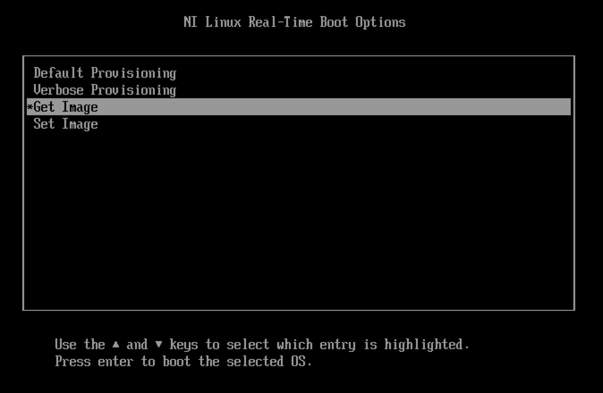
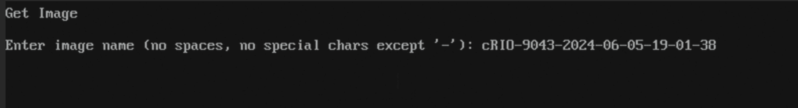
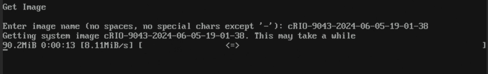
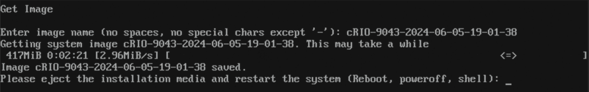
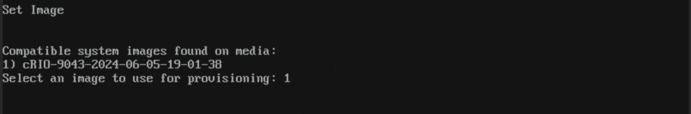
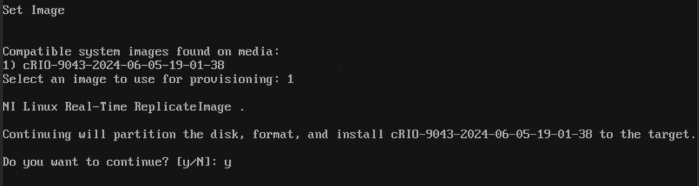
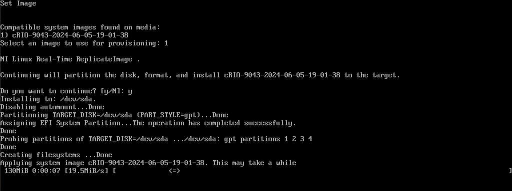
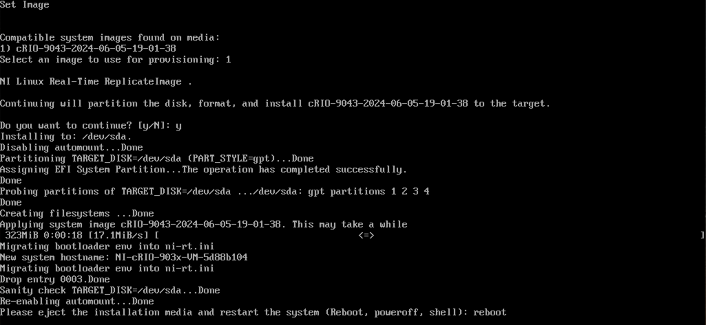

USB-Based System Replication¶
Introduction¶
The USB-based system replication feature allows saving the full disk image of an x64 based NI Linux RT capable target and applying it to same or different target(s) of the same model.
This feature will replicate all disk contents, including safemode, runmode, drivers, other installed software, settings, and user files.
Some settings such as Hostname, SSH keys, Salt Minion ID, that uniquely identify a target on a network are not replicated to prevent conflicts on the network.
Preparing a USB Drive¶
Complete the following steps to prepare a USB drive. These steps are meant to be performed on a Windows system with the NI Linux RT System Image installed.
Format a USB drive with FAT32 File System and set NIRECOVERY as Volume label.
{kind=link}
Mount nilrt-recovery-media-x64.iso found under C:\Program Files (x86)\National Instruments\RT Images\Utilities\Linux RT Safemode\<version 24.8 and above> and copy the contents to the USB drive. Do not write the entire iso file to the USB drive.
Note
Only nilrt-recovery-media-x64.iso included with version 24.8 and above of NI Linux RT System Image can be used to create a USB drive capable of system replication.
Getting an Image¶
The USB drive prepared above can be used to make a system image of an x64 NI Linux RT target.
To make a system image, connect the USB drive to the NI Linux RT target, reboot the target, and boot to the USB drive. The boot order might need to be manually changed in order to boot from the USB drive.
When the following menu appears, select the Get Image menu option.

Enter a name for the image (make sure there are no spaces or special characters except -) or accept the provided name.

Getting the image can take a few minutes depending on the amount of user data and write speed of the USB drive. The progress bar will keep moving to show progress.

The image will be saved to the USB drive under Images/<NameOfSystemImage>.
The tool will estimate if the available space on the USB drive will be sufficient to store the contents of all partitions. If there is insufficient space an error will be displayed.
When the operation is complete, the following prompt will be shown. The USB drive can then be removed. Type reboot, and press Enter to reboot the target.

Setting an Image¶
The USB drive prepared above can be used to apply a system image to an x64 NI Linux RT target.
To apply a system image, connect the USB drive to the NI Linux RT target, reboot the target, and boot to the USB drive. The boot order might need to be manually changed in order to boot from the USB drive.
When the menu appears, select the Set Image menu option.
All images that are available on the USB drive and are compatible with the target will be listed. Select one by entering the corresponding number and press Enter.

Confirm to begin applying the specified image by entering y.

A progress bar will keep moving to show progress.

When the operation is complete, the following prompt will be shown. The USB drive can then be removed. Type reboot, and press Enter to reboot the target.

Using an Answers File¶
A file named ni_provisioning.answers can be placed in the root directory of the USB drive to disable interactive user prompts. Each prompt has a corresponding variable that can be set to the desired value.
For example, creating an ni_provisioning.answers file in the root directory of the USB drive with the following contents will disable all user prompts for Get Image and Set Image operations.
When “Get Image” is selected in the boot menu, the saved image will be named “NameOfSystemImage” and the target will be powered off after the image is made.
When “Set Image” is selected in the boot menu, an image on the USB drive named “NameOfSystemImage” will be selected, the confirmation to repartition prompt will be confirmed, and the target will be powered off after the image is applied.
#NI_PROVISIONING_ANSWERS_V1
# Setting this to "y" will disable the prompt asking for confirmation to repartition. Not applicable for the "Get Image" operation.
PROVISION_REPARTITION_TARGET="y"
# System Image name used for "Get Image" and "Set Image" operations. No spaces, no special characters except '-'.
PROVISION_SYSTEMIMAGE_NAME="NameOfSystemImage"
# Controls what action is performed after the "Get Image" or "Set Image" operation is complete. Accepted values are "reboot", "poweroff", and "shell".
PROVISION_REBOOT_METHOD="poweroff"